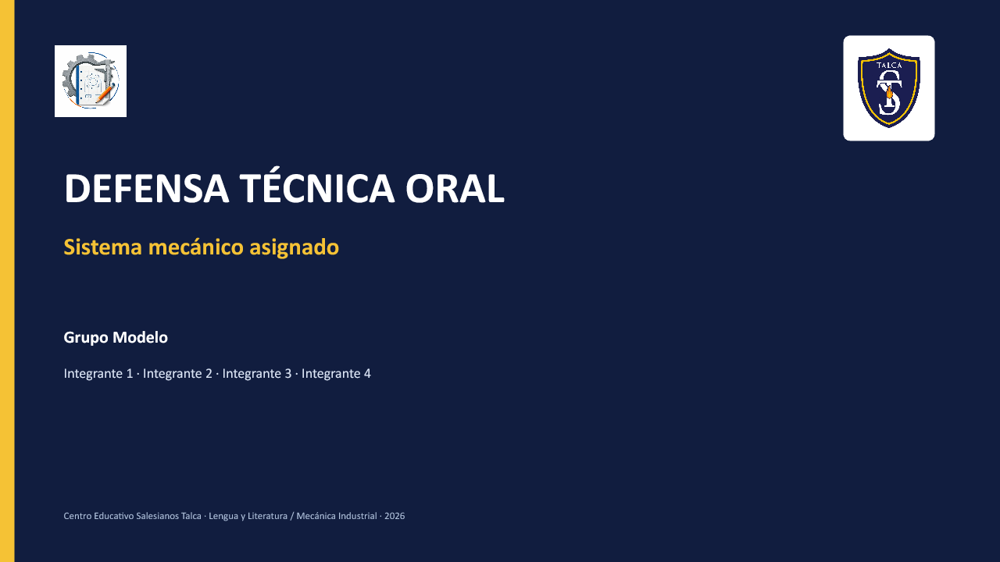

Etapa final · Formato de trabajo
Defensa Técnica Oral
Transformen el informe entregado en una exposición breve, visual y técnicamente defendible. La presentación debe mostrar qué hicieron, qué evidencia reunieron, qué diagnosticaron y qué recomiendan.
Los grupos que ya entregaron el informe pueden comenzar inmediatamente con su PowerPoint.
40%
Informe técnicoProducto escrito grupal
10%
AutoevaluaciónReflexión individual con evidencia
50%
DisertaciónDefensa técnica oral grupal
Plantilla personalizada
Descarga el PowerPoint de tu grupo
Cada archivo ya contiene el nombre de la máquina o conjunto y los integrantes del equipo. Las ocho diapositivas son editables e incluyen instrucciones en las notas del orador.
Selecciona un grupo para descargar
Archivo .pptx compatible con PowerPoint y Google Presentaciones.
Selecciona un grupo para verificar el tema, los integrantes y el archivo correspondiente.
Flujo de trabajo
Cómo convertir el informe en una exposición
01
Descarguen la plantilla del grupo.Guarden una copia con el nombre “Disertación 3ATP - Grupo N” antes de editar.
02
Extraigan solo la información necesaria del informe.No peguen párrafos completos: sinteticen cada idea para que pueda explicarse oralmente.
03
Incorporen fotografías y evidencias reales.Cada imagen debe mostrar un detalle relevante y tener una explicación técnica asociada.
04
Distribuyan las intervenciones.Todos los integrantes deben explicar una sección y comprender el diagnóstico global.
05
Ensayen con la pauta abierta.Revisen claridad, lectura mínima, evidencia, vocabulario técnico y posibles preguntas.
Estructura obligatoria
Las ocho diapositivas cumplen una función distinta
La presentación debe avanzar desde el contexto hasta una recomendación defendible. Las miniaturas muestran la organización visual de la plantilla; los textos de orientación y los espacios de imagen deben reemplazarse con información y fotografías reales del equipo.
Una idea centralCada diapositiva responde una pregunta distinta. No repitan el mismo contenido con otras palabras.
Texto para apoyarUsen frases breves, conceptos clave y datos. La explicación completa corresponde a la exposición oral.
Evidencia legibleIncorporen fotografías propias, acercamientos y rótulos que puedan comprenderse desde el público.
Decisiones defendiblesRelacionen procedimiento, hallazgo y recomendación. Toda conclusión debe tener un respaldo observable.
50% de la nota final
Pauta analítica de la disertación
Cada criterio se califica por separado. Los criterios grupales consideran el contenido y la presentación; los individuales consideran el desempeño de cada expositor. No basta con que la diapositiva contenga el dato: el equipo debe explicarlo y defenderlo oralmente.
| Criterio | Nivel 4 | Nivel 3 | Nivel 2 | Nivel 1 |
|---|---|---|---|---|
| Dominio técnico, precisión y evidencia Grupal · 14 puntos | Explica correctamente funcionamiento, procedimiento, hallazgos y diagnóstico. No comete errores conceptuales y vincula cada conclusión con una fotografía, medición o registro. 13–14 pts. | Explica correctamente el proceso y el diagnóstico; presenta una imprecisión menor que corrige al ser consultado o deja una conclusión sin respaldo explícito. 10–12 pts. | Explica parcialmente el proceso o confunde un concepto técnico relevante; presenta evidencia, pero no demuestra cómo sostiene el diagnóstico. 6–9 pts. | Comete errores conceptuales que alteran el diagnóstico o enumera términos, pasos y datos sin poder explicarlos. 0–5 pts. |
| Organización y síntesis Grupal · 7 puntos | La secuencia conecta contexto, objetivo, procedimiento, evidencia, diagnóstico y recomendación; cada diapositiva aporta una idea nueva. 7 pts. | La secuencia permite seguir el proceso, aunque una transición o conclusión repite información en vez de desarrollarla. 5–6 pts. | Las secciones aparecen, pero el público debe reconstruir cómo se relacionan procedimiento, hallazgos y propuesta. 3–4 pts. | La exposición reúne datos sin una secuencia reconocible o termina sin responder el objetivo. 0–2 pts. |
| Apoyo visual Grupal · 8 puntos | Predominan fotografías, diagramas, palabras clave y datos legibles. Cada imagen se utiliza para explicar el procedimiento, el hallazgo o el diagnóstico; el texto está sintetizado. 7–8 pts. | La presentación es principalmente visual y legible; una diapositiva contiene demasiado texto o una imagen no se relaciona oralmente con la conclusión. 5–6 pts. | Las imágenes solo decoran o no permiten verificar el hallazgo; varias diapositivas reproducen párrafos del informe. 3–4 pts. | Predominan bloques de texto que se leen en pantalla, faltan evidencias visuales propias o la información no puede verse desde el público. 0–2 pts. |
| Fluidez y comunicación oral Individual · 8 puntos | Habla con fluidez, voz audible y ritmo adecuado; mira al público, explica con sus propias palabras y usa vocabulario técnico preciso. La pantalla funciona como apoyo. 7–8 pts. | Se comunica con claridad y mantiene contacto visual frecuente; consulta brevemente notas o pantalla sin limitarse a leer. 5–6 pts. | Lee fragmentos extensos, pierde contacto visual o presenta pausas y un volumen que dificultan seguir parte de la explicación. 3–4 pts. | Lee la pantalla o sus apuntes sin desarrollar las ideas, habla de forma inaudible o no logra explicar su sección. 0–2 pts. |
| Presentación personal y postura Individual · 5 puntos | Presenta apariencia personal ordenada y apropiada para una exposición formal; mantiene postura erguida, ubicación adecuada y actitud respetuosa mientras habla y mientras exponen sus compañeros. 5 pts. | La presentación es adecuada; muestra una dificultad ocasional de postura, ubicación o atención que no interfiere con la exposición. 4 pts. | La postura, los desplazamientos, los gestos o la atención distraen reiteradamente al público. 2–3 pts. | La presentación personal no corresponde a la instancia o mantiene una actitud corporal y conductual que interfiere con el trabajo del equipo. 0–1 pt. |
| Participación y defensa ante preguntas Mixto · 8 puntos | Todos exponen una parte sustantiva. El equipo responde correctamente al menos dos preguntas de sus compañeros, fundamenta con evidencia y complementa las respuestas sin contradicciones. 7–8 pts. | Todos intervienen y el equipo responde dos preguntas; una respuesta es incompleta, poco fundamentada o requiere ayuda del docente. 5–6 pts. | La participación es desigual o el equipo responde solo una pregunta de manera correcta; conoce únicamente la sección memorizada por cada integrante. 3–4 pts. | Uno o más integrantes no intervienen, el equipo no responde correctamente las preguntas o contradice información central de su propio diagnóstico. 0–2 pts. |
Puntaje de la disertación: 50 puntos. Esta calificación corresponde al 50% de la nota final del proyecto.
10% de la nota final
Autoevaluación individual
Cada estudiante evaluará su proceso con evidencia concreta. La autoevaluación no consiste en asignarse una nota sin explicación.
Preparación técnica
Identifico qué contenidos estudié y qué parte del informe revisé para poder explicarla.
0–2 puntosAporte a la presentación
Indico qué diapositiva, evidencia, fotografía o síntesis elaboré y cómo se incorporó.
0–2 puntosEnsayo y cumplimiento
Registro cómo preparé mi intervención y si cumplí los acuerdos y plazos del equipo.
0–2 puntosParticipación oral
Explico qué sección presenté y cómo respondí o complementé preguntas técnicas.
0–2 puntosTrabajo colaborativo
Describo una acción concreta con la que apoyé la coordinación o resolución de dificultades.
0–2 puntosEscala: 2 puntos cuando presenta una evidencia específica; 1 punto cuando describe el aporte sin evidencia verificable; 0 puntos cuando no registra una acción propia.
Nota final del proyecto = (Informe × 0,40) + (Autoevaluación × 0,10) + (Disertación × 0,50).
Control final
Antes de presentar, revisen estos requisitos
El archivo corresponde al grupo y conserva los nombres correctos.
Las diapositivas contienen ideas breves, no párrafos copiados del informe.
Se incorporaron fotografías reales y legibles del trabajo.
Cada imagen se relaciona con una explicación o conclusión.
El diagnóstico distingue hallazgo, evidencia, causa y efecto.
La recomendación es viable y responde al diagnóstico.
Todos los integrantes tienen una intervención asignada.
El equipo puede responder preguntas sin leer el informe.